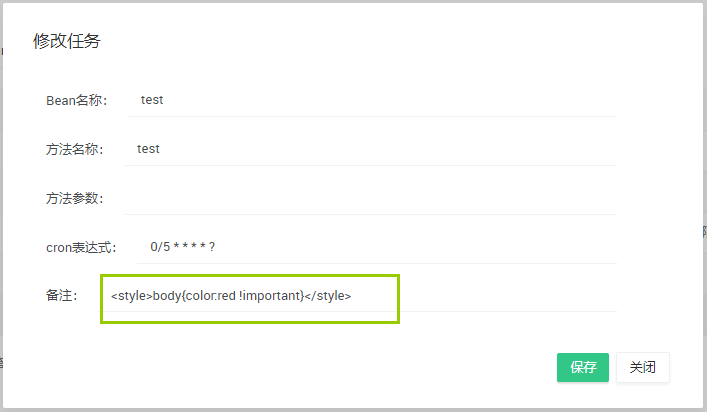
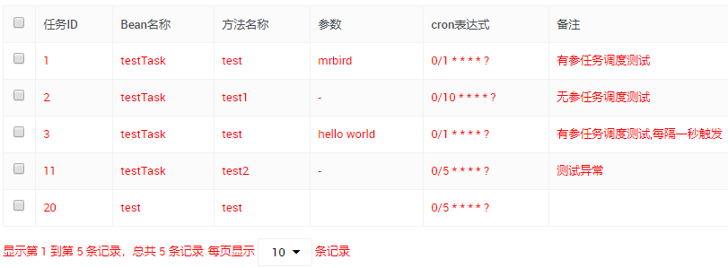

跨站脚本攻击(Cross Site Scripting)，为了不和层叠样式表(Cascading Style Sheets, CSS)的缩写混淆，故将跨站脚本攻击缩写为XSS。恶意攻击者往Web页面里插入恶意Script代码，当用户浏览该页之时，嵌入其中Web里面的Script代码会被执行，从而达到恶意攻击用户的目的。
使用Jsoup可以有效的过滤不安全的代码。Jsoup使用白名单的机制来预防XSS攻击，比如白名单中规定只允许<span>标签的存在，那么其他标签都会被过滤掉。
常见的XSS攻击
比如页面的某个表单允许用户输入任意内容，当某个调皮的用户输入如下内容： 
保存后，你会发现页面文字都变成了红色！

或者输入<script>for(var i=0;i<10;i++){alert("fuck you");}</script>，保存后页面将弹窗10次！
引入Jsoup
使用Maven构建一个简单的Spring Boot项目，在pom中引入：
1 | <dependency> |
JsoupUtil
创建一个JsoupUtil工具类：
1 | import java.io.FileNotFoundException; |
这里采用的白名单为basicWithImages，Jsoup内置了几种常见的白名单供我们选择，如下表所示：
| 白名单对象 | 标签 | 说明 |
|---|---|---|
| none | 无 | 只保留标签内文本内容 |
| simpleText | b,em,i,strong,u | 简单的文本标签 |
| basic | a,b,blockquote,br,cite,code,dd, dl,dt,em,i,li,ol,p,pre,q,small,span, strike,strong,sub,sup,u,ul | 基本使用的标签 |
| basicWithImages | basic 的基础上添加了 img 标签 及 img 标签的 src,align,alt,height,width,title 属性 | 基本使用的加上 img 标签 |
| relaxed | a,b,blockquote,br,caption,cite, code,col,colgroup,dd,div,dl,dt, em,h1,h2,h3,h4,h5,h6,i,img,li, ol,p,pre,q,small,span,strike,strong, sub,sup,table,tbody,td,tfoot,th,thead,tr,u,ul | 在 basicWithImages 的基础上又增加了一部分部分标签 |
XssHttpServletRequestWrapper
创建一个XssHttpServletRequestWrapper，同过重写getParameter()，getParameterValues()和getHeader()方法来过滤HTTP请求中参数包含的恶意字符：
1 | import javax.servlet.http.HttpServletRequest; |
XssFilter
创建XssFilter，同过使用上面定义的XssHttpServletRequestWrapper类中的getParameter()等方法来保证参数得到了过滤：
1 | import java.io.IOException; |
Spring Boot中配置XssFilter
使用JavaConfig的形式配置：
1 |
|
参考文章：